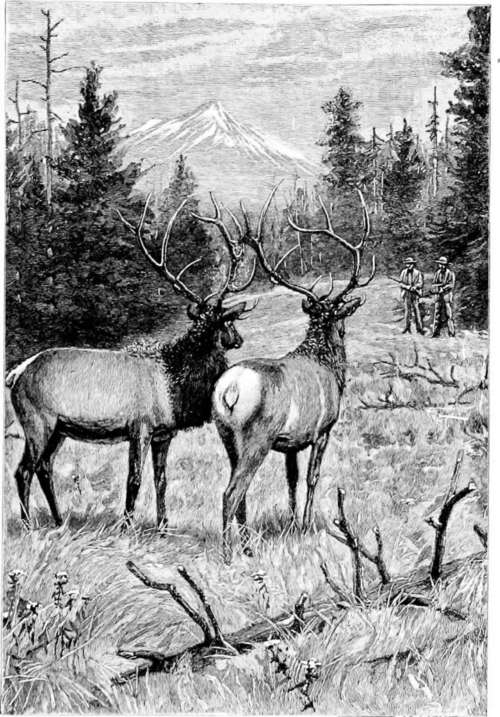

Hunting American Big Game. Part 5
Description
This section is from the book "Hunting", by Archibald Rogers. Also available from Amazon: Hunting.
Hunting American Big Game. Part 5
We saw six fine rams (of course, now that we did not want any); they did not seem to regard us with any uneasiness, permitting us to get within murderous distance, and I looked at their leader with some longing. He had such a noble head of curling, graceful, well-rounded horns. He must have been a powerful adversary when it came to butting. Stifling the intent, I passed by without disturbing them, and at last reached the top of the divide, and was repaid by a glorious view.
At that time Nature was not in her most smiling garb. It had been steadily growing colder; ominous clouds were gathering in the west, and an ugly rolling of thunder warned us that no genial spring-day, with shirt-sleeve accompaniment, was to gladden and cheer us. Still we must look for bears; so buttoning up our coats, and turning up our collars, we surveyed the country. At the same time it was impossible to forego a study of the grandeur of the view displayed before us.
Those who have seen the mountains and foot-hills only in the fall of the year, when every blade of grass is parched and brown and dry, can form no adequate idea of the change that presents itself in the spring. Especially is one surprised when, standing on the top of some mountain height surrounded by everlasting snow, he looks down over the valleys, and sees the richness and vividness of the green-growing grasses which seem to roll up almost to his feet. As we stood there, we had a glorious panorama. The vast gathering storm was at our backs; and the sun, though not shining for us, was lighting up the broad valley below. Greybull River stretched away until it joined the Big Horn beyond. The whole range of the Big Horn Mountains was visible, their snow-tops glistening like a bank of silver clouds; and the main range we were standing on was brought out in all its dazzling grandeur. Snowdrift upon snowdrift, with gracefully curling crests, stretched away as far as the eye could reach, for miles and miles. Still we saw no bear; and while we were enjoying all this wonderful scenery we neglected the storm, and were soon enveloped in a raging tempest of wind and snow, with a demoniacal accompaniment of lightning and crashing thunder.
We hunched up our backs, and stumbled along the ridge before the blast, and were soon brought up by a drift. However, here is luck for once! We saw the print of two fresh bear-tracks crossing the drift. All thoughts of the storm were lost in our delight at the vicinity of bears, for the sign was very fresh. Alas, though! we lost them after crossing the drift, and it was impossible to find them again upon the rugged soil of these ridges where the wind had blown the snow off. We circled round and round, studying every patch of snow; and my companion, Woody, looked and spoke doubtfully. At last I caught the trail again. Only a half-dozen tracks, but enough to show the right direction; and as we ascended the ridge the tracks were on, I saw the two rascals across the gulch on an enormous snowdrift, tearing and chewing at something, I couldn't make out what.
Not to shoot, but to photograph them
It was still snowing hard, but it was only a squall, and nearly over. The wind was wrong; it unfortunately blew toward the bears, and the only direction in which we could stalk them. Still an attempt had to be made. We took the bridles from our horses, and let down our hacka-mores, to let them feed comfortably and out of sight, while we crawled up the ridge to where it joined the one the bears were on. We had to creep up a beastly-snowdrift, which was soft, and no telling how deep.
It was deep enough, for we went through sometimes to our armpits. But what mattered it when we were at concert pitch, and bear for the tune? We were now on the same ridge as the bears. Cautiously, with the wind just a little aslant, we crawled down toward our prey, crossing another miserable snowdrift, into which we went up to our necks, where we brought up, our feet having touched bottom. We floundered out behind a small rock, and then looked up over at the bears. Too far to shoot with any certainty; and I said to Woody, "I must get closer." And so back we crawled.
Making a little detour, we bobbed up again, not serenely, for the wind was blowing on the backs of our necks straight as an arrow to where the bears were. But we were a little higher up on the ridge than they, and our taint must have gone over them; for when I looked up again one of the bears was chewing a savory morsel, and the other was on his hind legs, blinking at the sun, which was just breaking through the clouds. Wiping the snow and drops of water and slush from our rifles and sights, and with a whispered advice from Woody not to be in a hurry if they came toward us, but to reserve fire in order to make sure work,— for no sheltering tree awaited us as a safe retreat, nothing but snowy ridges for miles,—I opened the ball with the young lady who was sitting down.
She dropped her bone, clapped one of her paws to her ribs, and to my happiness waltzed down the snowbank. As she now seemed to be out of the dance, I turned to her brother,— for such I judged him to be afterward,—who, with great affection, had gone down with her until she stuck her head in the snow. Not understanding this, he smelled around his fallen relative, when a hollow three-hundred-and-thirty-grain chunk of lead nearly severed one hip and smashed the other. He did not stop to reason, but promptly jumped on his relative, and then there occurred a lively bit of a scrimmage. Over and over they rolled, slapping, biting, and making the best fight of it they could, considering the plight they were in. Each probably accused the other of the mishap.
The snow was dyed a crimson hue. It was like the scene of a bloody battleground.
At last the aggrieved lady gave up, and plunged her head back into the snow, while her brother, not having any one to fight with, went off a short distance and lay down. We cautiously approached, bearing in mind that a snowdrift is a hard thing for pedestrians in a hurry to travel on; and when we got about ten feet from the first bear, I told my companion to snowball her, and see what effect that would have, for she looked too innocent to be dead and finished for.
Continue to: